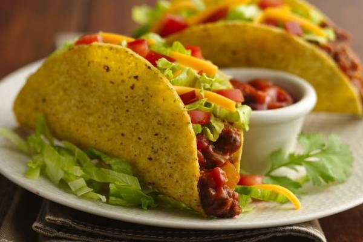

Delicious Taco Recipe
Are you craving some delicious, mouth-watering tacos? Whether you're a seasoned chef or a kitchen newbie, our easy-to-follow taco recipe is here to guide you to a delightful meal. Packed with flavor, each bite offers a satisfying mix of savory, spicy, and fresh. Let's bring the iconic street-food experience right to your dining table. Dive in and let's get cooking!
Ingredients:
| Ingredient | Quantity |
|---|---|
| Ground beef | 500 grams |
| Taco seasoning | 1 packet |
| Soft or hard taco shells | 8 shells |
| Grated cheese | 1 cup |
| Lettuce (chopped) | 2 cups |
| Tomatoes (diced) | 2 tomatoes |
| Sour cream | 1/2 cup |
Instructions:
- In a pan over medium heat, cook the ground beef until browned. Drain the excess fat.
- Add the taco seasoning to the beef and cook according to the packet's instructions.
- While the beef is cooking, prepare the taco shells according to the package directions.
- Once the beef is ready, spoon it into each taco shell.
- Top with cheese, lettuce, tomatoes, and sour cream as desired.
- Serve immediately and enjoy!
Tips:
- For a spicier kick, add some jalapeños or hot sauce.
- Experiment with other toppings like guacamole, olives, or bell peppers for variety.